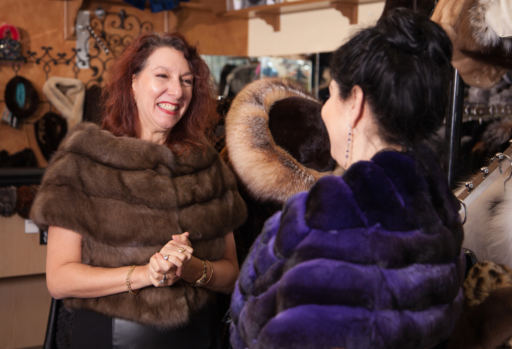

Odiniai drabužiai | Kailiniai, kailiai | Lininiai drabužiai
 Susisiekite su mumis Lietuvių kalba English Lietuvių kalba Prisijungti 0 Krepšelis / Empty Your cart × Jūsų krepšelyje nėra prekių Moterims Moterims Audinių kailiniai Kailiniai / avikailiai Odinės striukės Pūkinės striukės MaxMara leisure linija Itališki drabužiai Vyrams Vyrams Kailiniai / avikailiai Odinės striukės Pūkinės striukės Aksesuarai Aksesuarai Šalikai ir skaros Rankinės / Kuprinės Kepurės Pirštinės Dėklai ir piniginės Kiti Išpardavimai Parduotuvės Pagrindinis Moterims Audinių kailiniai Kailiniai / avikailiai Odinės striukės Pūkinės striukės MaxMara leisure linija Itališki drabužiai Vyrams Kailiniai / avikailiai Odinės striukės Pūkinės striukės Aksesuarai Šalikai ir skaros Rankinės / Kuprinės Kepurės Pirštinės Dėklai ir piniginės Kiti Išpardavimai Parduotuvės Menu Paieška Prisijungti 0 Krepšelis Pagrindinis
Nauja MaxMara Leisure ruduo/žiema kolekcija!
Nauja MaxMara Leisure ruduo/žiema kolekcija!
Naujausios prekės Išpardavimai −30,88% Liko 1 prekė PagrindinisOdinė striukė Celine
Werner Crist Celine 470,00 € 680,00 € Raudona Sudėtis: 100% natūrali oda −50% Liko 1 prekė PagrindinisOdinė striukė
DC-3099 236,00 € 472,00 € Juoda šviesi levandų Sudėtis: natūrali oda 100% −50% Liko 1 prekė PagrindinisOdinė striukė Siayah
DC-2381 320,00 € 640,00 € Juoda Sudėtis: natūrali oda 100% −60% Liko 1 prekė PagrindinisOdinė striukė Powder
DC-2386 247,60 € 619,00 € Smėlio Composition: genuine leather 100% −49,93% Liko 1 prekė PagrindinisOdinė striukė
DK-3032 374,00 € 747,00 € Juoda Sudėtis: natūrali oda 100% −41,82% Liko 1 prekė PagrindinisOdinė striukė
Robertas 640,00 € 1 100,00 € Juoda Sudėtis: natūrali oda 100% −50,1% Liko 1 prekė PagrindinisOdinė striukė
DC-8033 263,00 € 527,00 € Juoda Sudėtis: natūrali oda 100% −50% Liko 1 prekė PagrindinisOdinė striukė
2332100 282,00 € 564,00 € Juoda Sudėtis: natūrali oda 100% −50% Liko 1 prekė PagrindinisOdinė avikailio striukė
Werner Crist Gero 907,50 € 1 815,00 € Juoda tamsiai ruda Sudėtis: natūrali oda 100% −30% Liko 1 prekė PagrindinisVerstos odos avikailio puspaltis
Werner Crist Cilly 1 005,20 € 1 436,00 € tamsiai mėlyna Sudėtis: natūrali oda 100% Visi išpardavimai Apie mus "CRONUS" duris atvėrė 1994 m. ir iki šiol sėkmingai dirba Vilniuje, Kaune, Klaipėdoje ir Druskininkuose.
"Gerą reputaciją turi užsidirbti" – tai nuolat kartoja "CRONUS" salonų vadovai. Todėl mūsų gaminiai siejami ne tik su kokybės, patikimumo ir ilgaamžiškumo vardu, tačiau ir su rūpestingu, atidžiu aptarnavimu, dėmesiu kiekvieno pirkėjo poreikiams.
Mūsų tikslas – padėti išsirinkti iš „gražiausia, ką pateikia pasaulis".
„Cronus" salonuose platus kailinių, odinių ir tekstilinių gaminių pasirinkimas:
– audinės ,karakulio, sabalo, kailiniai
– drabužiai iš avikailio
– odinės striukės
– avalynė bei rankinės
– kailinės bei odinės kepurės, šaliai, pirštinės, rankinės
– piniginės
– MaxMara leisure drabužių linija
– Italijos gamintojų drabužiai
– lino gaminiai
– kita produkcija
Informacija
Pristatymas ir grąžinimas Privatumo politika Sąlygos ir nuostatos Susisiekite su mumis ParduotuvėsSusisiekite su mumis
UAB Orandis , Įmonės kodas 301932537, PVM LT100004345519 Turgaus g. 13, Klaipeda, Lithuania +370 46 214223 turgaus@cronus.ltSekite mus
websvetaines.eu
Informuojame, kad šioje svetainėje naudojame slapukus (angl. cookies), kurie rinktų statistinę informaciją apie lankytojus ir sektų jų veiksmus tiesioginės rinkodaros vykdymo tikslais. Jeigu sutinkate, paspauskite mygtuką „Sutinku". Jeigu nesutinkate, slapukų Jūsų įrenginyje netalpinsime, tačiau kai kurios svetainės funkcijos gali iš dalies ar visiškai neveikti. Duotą sutikimą galite bet kada atšaukti naršyklėje ištrindami slapukus arba nustatydami naršyklės parametrus taip, kad slapukai nebūtų įrašomi.
Sutinku